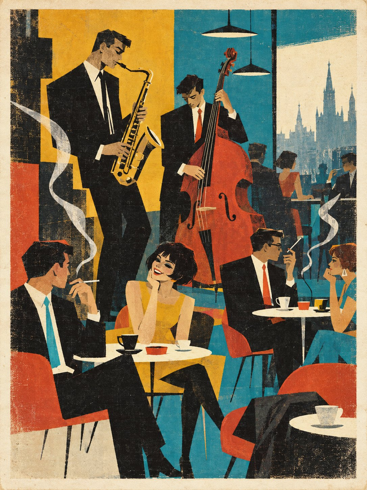

§6. Сытые годы (1960-е)

Шестидесятые годы ваши бабушки и дедушки вспоминают как самое благополучное время. Работы хватало всем, жалованье росло каждый год. Помогла и своя нефть. Большие месторождения нашли в Поволжье ещё в 1948 году, и к шестидесятым Россия впервые перестала покупать топливо у соседей. Семьи переезжали из общих квартир в отдельные, в новые кварталы на окраинах. В 1961 году в Москве открылся первый магазин самообслуживания, где покупатель сам брал товар с полки. В 1963 году с полигона под Оренбургом запустили первый русский искусственный спутник, через пять лет после американского.
Благополучие имело свою цену. Газеты писали, что люди стали думать только о покупках. Молодёжь скучала. В мае 1968 года студенты Петрограда и Москвы на две недели заняли университеты. Они требовали отменить плату за обучение и пустить студентов в университетские советы.
Молодые горожане жили с оглядкой на Америку и Париж. Они слушали джаз, носили узкие брюки и яркие галстуки, читали переводные романы и спорили о них в кафе. Старшие ворчали и называли их «штатниками». А деревня в эти годы пустела: молодёжь уезжала в города за лёгкой работой и отдельной квартирой. Особенно это было заметно в Сибири и на Алтае, где сёла стояли далеко друг от друга. Тех, кто остался, в городе считали чудаками, а они считали чудаками городских.
Туркестанский вопрос решился в эти годы мирно. Туркестанская дума много лет просила независимости, и в 1962 году в Ташкенте был подписан договор: Туркестан стал отдельным государством, а русским жителям оставили их дома, школы и право на два паспорта. В Ташкенте, Верном и Самарканде жило тогда около миллиона русских. Никто их не гнал, но новая жизнь шла на другом языке, и за двадцать лет больше половины понемногу уехали в Россию. Их называли «ташкентцами». Они приезжали по одному, с чемоданами и ташкентским выговором, в страну, которую знали только по книгам.
В искусстве в эти годы заново открыли забытое. Издатели и музеи разыскивали художников и поэтов-авангардистов двадцатых годов. Многие из них были ещё живы и доживали свой век в Петрограде в безвестности. Старики, над которыми раньше смеялись, вдруг вошли в моду.
Запомните даты. 1962 год: независимость Туркестана. 1963 год: первый русский спутник. Май 1968 года: студенческие волнения.
Вопрос. Почему молодые люди бунтовали в самые сытые годы?